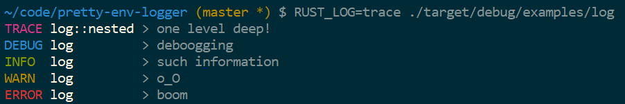

这周了解一下 rust 的日志系统。
日志库是产品级软件开发中经常使用的组件，用来记录系统运行的日志，经常我们会把日志按照重要性分成几个级别，有时候会输出到终端中，有时候会输出到日志文件，或者输出到某个集中的日志处理系统中。
Java中曾经广泛使用的是apache log4j日志库，后来slf4j逐渐流行并广泛使用，slf4j是一个日志门面，具体的日志还是可以通过log4j或者logback等日志框架来实现。 通过定义统一的日志门面，可以让开发者不必拘泥于日志框架的选择，使用统一的日志记录方式，可以自多个日志框架中灵活切换。
rust也有类似的“日志门面”库， 也就是log库。
log 日志门面库
所谓门面，其实就是它定义了一套统一的日志trait API， 抽象出来日志的常规操作，具体的日志库实现它定义的API。好处就是其他人在输出日志的时候，不必绑定特定的日志框架，代码中只需要使用门面库提供的API即可。在程序启动的时候，设置使用哪个具体的日志框架即可。
它使用很简单，在cargo配置文件的依赖中加上它：
|
|
和其它语言的日志库一样，它定义了log的级别Level:
- Error: 严重错误
- Warn: 危险状况
- Info: 有用的信息
- Debug: 低优先级的调试信息
- Trace: 非常低的优先级，很详细的信息
一般生产系统我们会把级别设置为Info或者Warn级别，在开发的过程中才设置为Debug甚至Trace级别。
LevelFilter枚举类型同Level,主要用在设置max_level的操作上。
Log trait是核心，它定义了三个方法：
fn enabled(&self, metadata: &Metadata) -> bool: 返回这条log是否允许输出日志, 具体的日志库可以根据Metadata中的日志级别来判断fn log(&self, record: &Record): 记录这条日志，这里日志使用Record来表示这条日志fn flush(&self): flush缓存的日志
log门面库针对每个级别提供了对应宏，方便记录日志。
- debug!
- error!
- info!
- log!
- log_enabled!
- trace!
- warn!
|
|
更抽象的:
|
|
库的开发者
如果你是rust库的开发者，自然你不期望你自己的框绑定某个具体日志库，而是只使用log门面日志库，你可以这样使用:
|
|
应用开发者
如果你是应用程序的开发者，你除了在代码中使用log门面库，还需要在可执行程序启动的时候设置具体的日志库。如果没有设置具体的日志库，那么log门面库就退化成noop实现，也就是忽略所有的日志，这这种情况下，使用log库和不使用log的性能差异是很细微的，仅仅是integer的load，比较和跳转。
你需要使用set_logger函数设置你选择的日志实现库，还可以通过set_max_level设置日志的最大级别。默认它的值是Off,这意味着它不会输出日志，所以一般情况下你会设置它。
如果我们把最大日志级别设置为Info,那么Debug和Trace的日志会被忽略。
set_logger要求你传入一个&'static Log, 这个要求如果对你来说有点高的话，你也可以使用set_boxed_logger传入一个Box<Log>, 功能同set_logger，只不过要求低了一些。
最大log级别设置可以在编译期的时候静态禁止，被禁止的log甚至不会被编译到二进制文件中。
|
|
下面两个feature进一步地增加了log filter：
std: 允许使用stdcrate而不是corecrate, 允许使用std::error和set_boxed_loggerserde: 可以序列化和反序列化Level和LevelFilter
日志库的开发者
如果你是一个日志库的开发者，你需要实现Logtrait,下面是一个简单的日志库的例子：
|
|
你还应该提供一个函数，用来包装调用set_logger和set_max_level：
|
|
当然，大几率你不会实现自己的日志库，因为已经有很多的日志库的实现可供我们实现， 比如下面是一些流行的日志库的实现：
- 简单小型的日志库:
- 复杂的可配置的日志库:
- 其它日志系统的适配器:
- 专为WebAssembly设计的日志库:
比如我们使用pretty_env_logger日志库作为我们输出的日志库：
|
|
它可以输出很漂亮的日志：

另外一个日志库是slog,它可以进行更复杂的更多特性的设置，学习曲线更陡， libra中就使用作为日志库。